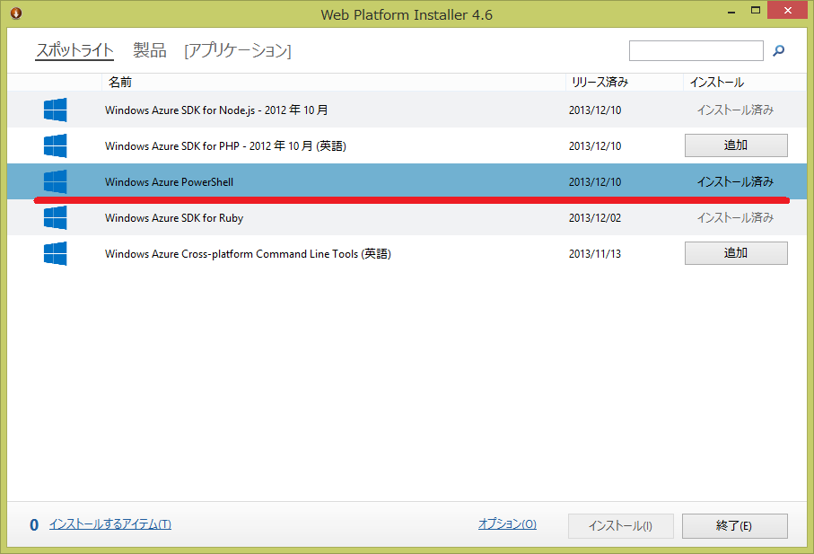

Windows Azure Powershell 0.7.2 リリース
Windows Azure Powershell 0.7.2 がリリースされました。 10月の 0.7.0 、11月の 0.7.1 続く12月リリースです。最近毎月リリースされています。Azureに新機能が出ると追っかけでcmdletが追加されますね。 | 主な変更は、HDInsight cmdletsの追加、Web Site、VM cmdletの改善、Virtual IP reservation、Cloud Service cmdletの Visual Studio 互換です。

Web Platform Installer を起動すると、12/10 リリースのWindows Azure Poershell があります。
インストールしたら念のためバージョンを確認します。Azureの所が、0.7.2ですね。
$ Get-Module | ft name,version
Name Version
---- -------
Autoload 0.0
Azure 0.7.2
Microsoft.PowerShell.Management 3.1.0.0
Microsoft.PowerShell.Utility 3.1.0.0
posh-git 0.0
PsEnv 0.0
PSReadline 1.0.0.1
変更点
- HDInsight cmdlets
- Add-AzureHDInsightConfigValues
- Add-AzureHDInsightMetastore
- Add-AzureHDInsightStorage
- Get-AzureHDInsightCluster
- Get-AzureHDInsightJob
- Get-AzureHDInsightJobOutput
- Get-AzureHDInsightProperties
- New-AzureHDInsightCluster
- New-AzureHDInsightClusterConfig
- New-AzureHDInsightHiveJobDefinition
- New-AzureHDInsightMapReduceJobDefinition
- New-AzureHDInsightPigJobDefinition
- New-AzureHDInsightSqoopJobDefinition
- New-AzureHDInsightStreamingMapReduceJobDefinition
- Remove-AzureHDInsightCluster
- Revoke-AzureHDInsightHttpServicesAccess
- Set-AzureHDInsightDefaultStorage
- Start-AzureHDInsightJob
- Stop-AzureHDInsightJob
- Use-AzureHDInsightCluster
- Wait-AzureHDInsightJob
- Grant-AzureHDInsightHttpServicesAccess
- Invoke-AzureHDInsightHiveJob
- Web Site の WebSocket と managed pipe mode の設定
- Set-AzureWebsite -WebSocketEnabled -ManagedPipelineMode
- Web Site の remote debugging 設定
- Enable-AzureWebsiteDebug -Version
- Disable-AzureWebsiteDebug
- VM を削除した時の VHD cleaning up オプション
- Remove-AzureVM -DeleteVHD
- Remove-AzureService -DeleteAll
- Remove-AzureDeployment -DeleteVHD
- 仮想 IP 予約 (Virtual IP reservation) preview feature (in AzurePreview module)
- Get-AzureDeployment
- Get-AzureReservedIP
- New-AzureReservedIP
- New-AzureVM
- Remove-AzureReservedIP
- 下記の cmdletsでの Visual Studio Cloud Service プロジェクトのサポート
- Start-AzureEmulator
- Publish-AzureServiceProject
- Save-AzureServiceProjectPackage
最後に
個人的にはVisual Studioで作ったプロジェクトが使えるようになったのが一番嬉しいのです。